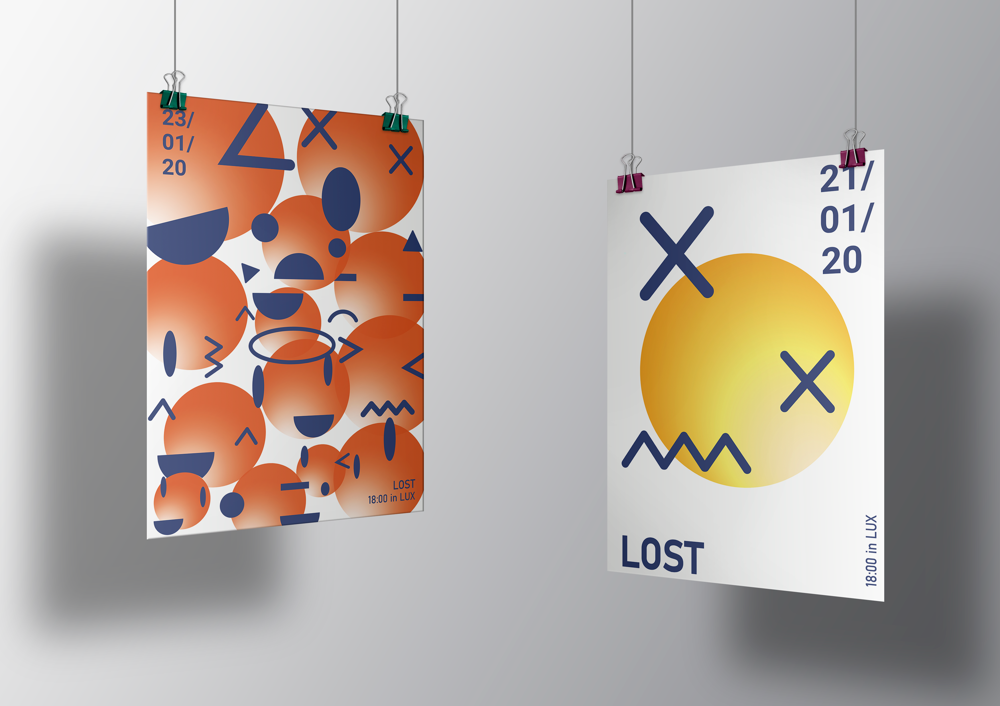
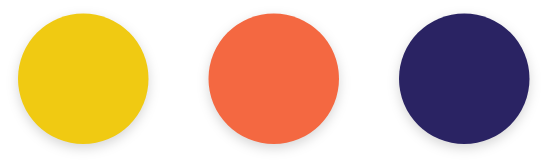

Soziale Netzwerke sind jetzt ein sehr wichtiger Teil unseres Leben geworden. Mit dem Aufkommen von Instagram wurden Inhalte überwiegend visuell. Wir nutzen solche Plattformen wie Instagram und Pinterest zur Inspiration. Oft verirren wir uns im Dschungel der endlosen Posts und wir können uns nicht mehr dran erinnern, was unsere Hauptaufgabe war. Nach einer langen Zeit in sozialen Netzwerken scheint es uns bereits, dass alle unsere Ideen nicht so gut sind und wir niemals den gleichen Erfolg erzielen werden.

Für meine visuelles Konzept dienen Emoji als Inspirationsquelle, da die in Sozial Media zur Bewertung oft eingesetzt werden. Die Emojis werden abstrakt dargestellt, die Grundformen kann man noch erkennen, aber gleichzeitig sind sie mehr oder weniger verzerrt. Das was für uns bekannt ist ,kommt fremd an.
